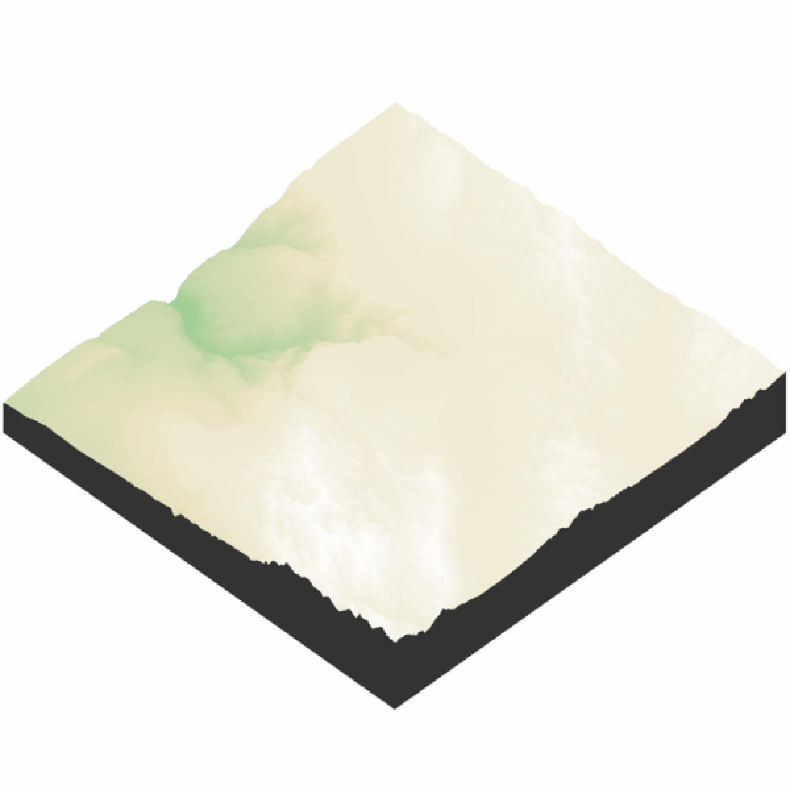
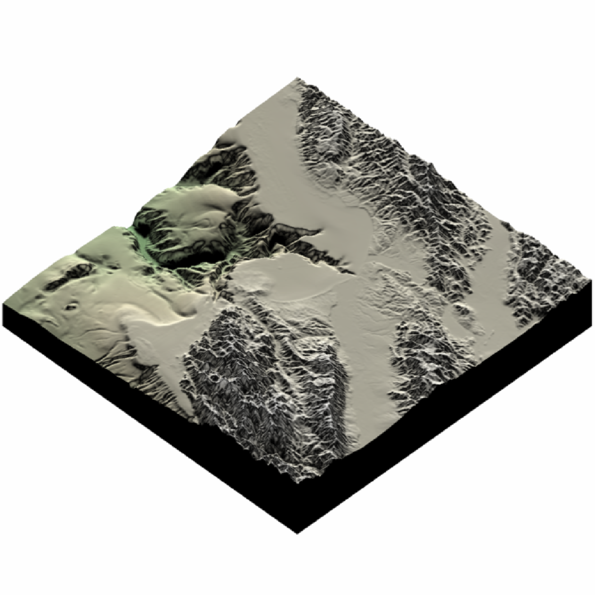
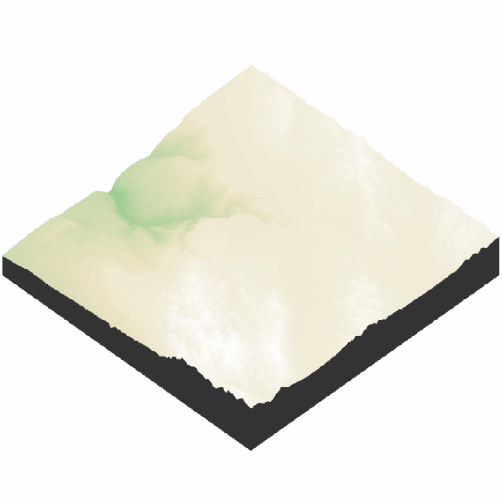
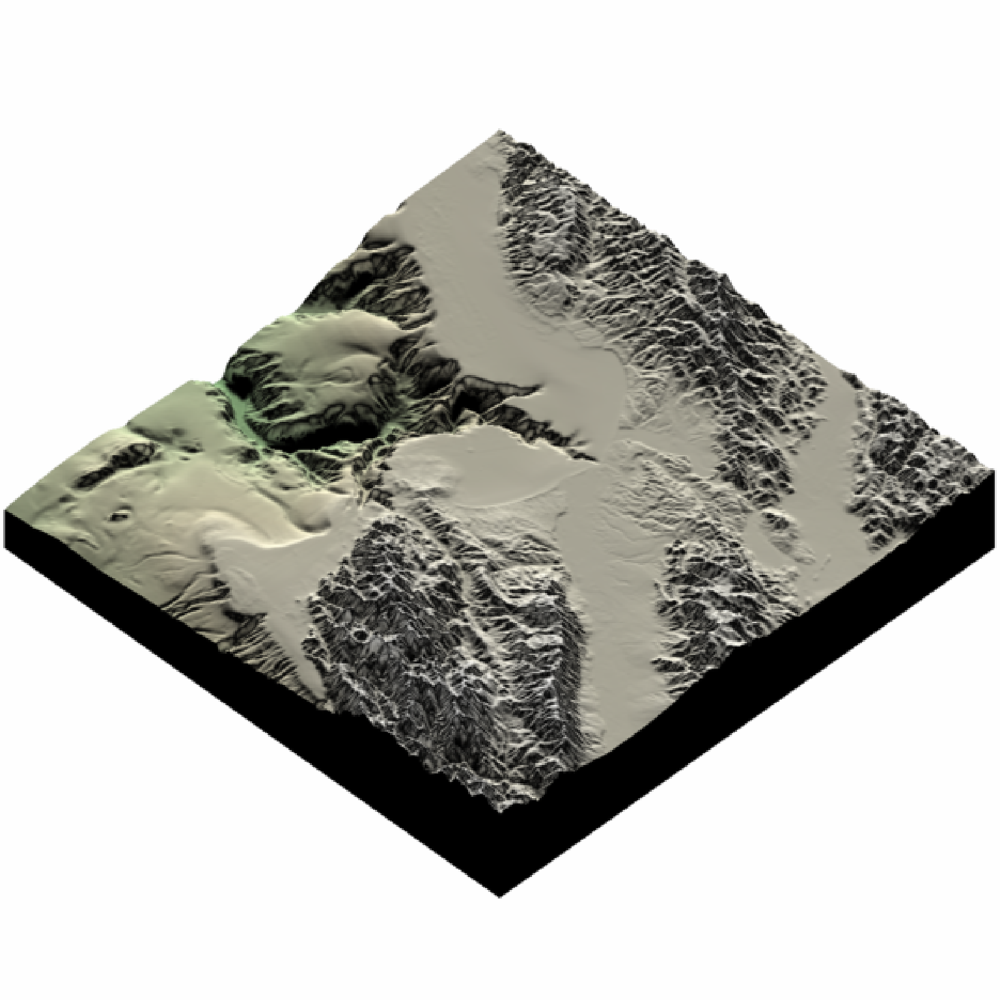

Either captures the current rgl view and displays, or saves the current view to disk.
render_snapshot(
filename,
clear = FALSE,
title_text = NULL,
title_offset = c(20, 20),
title_color = "black",
title_size = 30,
title_font = "sans",
title_bar_color = NA,
title_bar_alpha = 0.5,
title_just = "left",
image_overlay = NULL,
vignette = FALSE,
vignette_color = "black",
vignette_radius = 1.3,
instant_capture = interactive(),
bring_to_front = FALSE,
webshot = FALSE,
width = NULL,
height = NULL,
software_render = FALSE,
camera_location = NULL,
camera_lookat = c(0, 0, 0),
background = NULL,
text_angle = NULL,
text_size = 30,
text_offset = c(0, 0, 0),
point_radius = 0.5,
line_offset = 1e-07,
thick_lines = TRUE,
line_radius = 0.25,
cache_scene = FALSE,
reset_scene_cache = FALSE,
new_page = TRUE,
print_scene_info = FALSE,
fsaa = 1,
rayvertex_lighting = FALSE,
rayvertex_lights = NULL,
rayvertex_shadow_map = FALSE,
plot = TRUE,
...
)Arguments
- filename
Filename of snapshot. If missing, will display to current device.
- clear
Default
FALSE. IfTRUE, the currentrgldevice will be cleared.- title_text
Default
NULL. Text. Adds a title to the image, using magick::image_annotate.- title_offset
Default
c(20,20). Distance from the top-left (default,gravitydirection in image_annotate) corner to offset the title.- title_color
Default
black. Font color.- title_size
Default
30. Font size in pixels.- title_font
Default
sans. String with font family such as "sans", "mono", "serif", "Times", "Helvetica", "Trebuchet", "Georgia", "Palatino" or "Comic Sans".- title_bar_color
Default
NA. If a color, this will create a colored bar under the title.- title_bar_alpha
Default
0.5. Transparency of the title bar.- title_just
Default
left. Justification of the title.- image_overlay
Default
NULL. Either a string indicating the location of a png image to overlay over the image (transparency included), or a 4-layer RGBA array. This image will be resized to the dimension of the image if it does not match exactly.- vignette
Default
FALSE. IfTRUEor numeric, a camera vignetting effect will be added to the image.1is the darkest vignetting, while0is no vignetting. If vignette is a length-2 vector, the second entry will control the blurriness of the vignette effect.- vignette_color
Default
"black". Color of the vignette.- vignette_radius
Default
1.3. Radius of the vignette, as a porportion of the image dimensions.- instant_capture
Default
TRUEif interactive,FALSEotherwise. IfFALSE, a slight delay is added before taking the snapshot. This can help stop prevent rendering issues when running scripts.- bring_to_front
Default
FALSE. Whether to bring the window to the front when taking the snapshot.- webshot
Default
FALSE. Set toTRUEto have rgl use thewebshot2package to take images, which can be used whenrgl.useNULL = TRUE.- width
Default
NULL. Optional argument to pass torgl::snapshot3d()to specify the width whensoftware_render = TRUE..- height
Default
NULL. Optional argument to pass torgl::snapshot3d()to specify the height whensoftware_render = TRUE.- software_render
Default
FALSE. IfTRUE, rayshader will use the rayvertex package to render the snapshot, which is not constrained by the screen size or requires OpenGL.- camera_location
Default
NULL. Custom position of the camera. TheFOV,width, andheightarguments will still be derived from the rgl window.- camera_lookat
Default
NULL. Custom point at which the camera is directed. TheFOV,width, andheightarguments will still be derived from the rgl window.- background
Default
NULL, defaults to device background. Background color whensoftware_render = TRUE.- text_angle
Default
NULL, which forces the text always to face the camera. If a single angle (degrees), will specify the absolute angle all the labels are facing. If three angles, this will specify all three orientations (relative to the x,y, and z axes) of the text labels.- text_size
Default
30. Height of the text.- text_offset
Default
c(0,0,0). Offset to be applied to all text labels.- point_radius
Default
0.5. Radius of 3D points (rendered withrender_points()). This scales the existing value of size specified inrender_points().- line_offset
Default
1e-7. Small number indicating the offset in the scene to apply to lines if using software rendering. Increase this if your lines aren't showing up, or decrease it if lines are appearing through solid objects.- thick_lines
Default
TRUE. Ifsoftware_render = TRUE, this will render path segments as thick cylinders. Otherwise, it will render the lines using a single-pixel anti-aliased line algorithm.- line_radius
Default
0.25. The radius of the thick cylinders ifthick_lines = TRUEandsoftware_render = TRUE.- cache_scene
Default
FALSE. Whether to cache the current scene to memory so it does not have to be converted to araymeshobject each timerender_snapshot()is called. IfTRUEand a scene has been cached, it will be used when rendering.- reset_scene_cache
Default
FALSE. Resets the scene cache before rendering.- new_page
Default
TRUE. Whether to callgrid::grid.newpage()before plotting the image.- print_scene_info
Default
FALSE. IfTRUE, it will print the position and lookat point of the camera.- fsaa
Default
1. Integer specifying the amount of anti-aliasing appliedsoftware_render = TRUE.- rayvertex_lighting
Default
FALSE. IfTRUEandsoftware_render = TRUE, the scene will use rayvertex lighting when rendering the scene, using the lights specified inrayvertex_lights. If no lights are specified there, they will be pulled fromlightobjects in therglscene.- rayvertex_lights
Default
NULL. Userayvertex::directional_light()andrayvertex::point_light()along with therayvertex::add_light()function to specify lighting for your scene whenrayvertex_lighting = TRUE.- rayvertex_shadow_map
Default
FALSE. IfTRUEandrayvertex_lighting = TRUEalong withsoftware_render = TRUE, shadow mapping will also be applied to the rendered scene.- plot
Default
TRUE. Whether to plot the snapshot.- ...
Additional parameters to pass to
rayvertex::rasterize_scene().
Value
Displays snapshot of current rgl plot (or saves to disk), as well as invisibly returns an RGBA rayimg array.
Examples
if(run_documentation()) {
montereybay |>
sphere_shade() |>
plot_3d(montereybay,zscale=50,zoom=0.6,theta=-90,phi=30)
}
if(run_documentation()) {
render_snapshot()
}
 #Create a title
if(run_documentation()) {
render_snapshot(title_text = "Monterey Bay, California", title_offset=c(0,20),
title_color = "white", title_bar_color = "black",
title_font = "Helvetica", title_position = "north")
#Add a vignette effect
render_camera(zoom=0.8)
render_snapshot(title_text = "Monterey Bay, California",
title_color = "white", title_bar_color = "darkgreen",
vignette = TRUE, title_offset=c(0,20),
title_font = "Helvetica", title_position = "north")
}
#> Error in rayvertex::rasterize_scene(scene, lookat = camera_lookat, camera_up = camera_up, filename = filename, fsaa = fsaa, lookfrom = lookfrom, width = width, height = height, ortho_dimensions = ortho_dimensions, fov = fov, background = background, light_info = lights, line_info = rayvertex::add_lines(labelline, pathline), line_offset = line_offset, shadow_map = rayvertex_shadow_map, ...): unused argument (title_position = "north")
#Use software rendering to render a scene with shadow mapping
if(run_documentation()) {
montereybay |>
height_shade() |>
plot_3d(montereybay, shadow=FALSE, solidlinecolor = NULL)
#No shadows
render_snapshot(software_render = TRUE)
}
#> `montereybay` dataset used with no zscale--setting `zscale=50`. For a realistic depiction, raise `zscale` to 200.

if(run_documentation()) {
#Now with shadow mapped shadows, calculated in rayvertex
render_snapshot(rayvertex_lighting = TRUE,
rayvertex_lights = rayvertex::directional_light(intensity = 1.2,
direction = c(-1, 1, -1)),
rayvertex_shadow_map = TRUE, software_render = TRUE)
}

#Create a title
if(run_documentation()) {
render_snapshot(title_text = "Monterey Bay, California", title_offset=c(0,20),
title_color = "white", title_bar_color = "black",
title_font = "Helvetica", title_position = "north")
#Add a vignette effect
render_camera(zoom=0.8)
render_snapshot(title_text = "Monterey Bay, California",
title_color = "white", title_bar_color = "darkgreen",
vignette = TRUE, title_offset=c(0,20),
title_font = "Helvetica", title_position = "north")
}
#> Error in rayvertex::rasterize_scene(scene, lookat = camera_lookat, camera_up = camera_up, filename = filename, fsaa = fsaa, lookfrom = lookfrom, width = width, height = height, ortho_dimensions = ortho_dimensions, fov = fov, background = background, light_info = lights, line_info = rayvertex::add_lines(labelline, pathline), line_offset = line_offset, shadow_map = rayvertex_shadow_map, ...): unused argument (title_position = "north")
#Use software rendering to render a scene with shadow mapping
if(run_documentation()) {
montereybay |>
height_shade() |>
plot_3d(montereybay, shadow=FALSE, solidlinecolor = NULL)
#No shadows
render_snapshot(software_render = TRUE)
}
#> `montereybay` dataset used with no zscale--setting `zscale=50`. For a realistic depiction, raise `zscale` to 200.

if(run_documentation()) {
#Now with shadow mapped shadows, calculated in rayvertex
render_snapshot(rayvertex_lighting = TRUE,
rayvertex_lights = rayvertex::directional_light(intensity = 1.2,
direction = c(-1, 1, -1)),
rayvertex_shadow_map = TRUE, software_render = TRUE)
}
